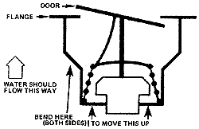

Wow. That's some title. But Richard Read did ask for help in finding a way to automatically control the temperature of his mini-fish-farm (see MOTHER NO. 32, page 34).
Maybe I can off or that assistance.
The simple thermostats used in the cooling systems of cars, trucks, and other vehicles (cost, about $2.00 each) can-with a little modification-automatically regulate the temperature of water flowing into such an aquatic food reserve. (The modification is necessary because these regulators are ordinarily set to open at around 160 degrees Fahrenheit . . . 80 degrees higher than the 800 temperature that Reed's tilapia find most comfortable. The alteration, however, can be easy . . . so don't lot it frighten you.)
The smallest thermostats, and therefore the best ones for our purposes, are those made for the newer model Chevrolets. Almost any brand of new or replacement automobile water temperature regulator, though, can be made to work the way we want it to.
The easiest of these thermostats to adapt to our use are the ones with a small temperature-adjustment screw that's held at any desired setting with a dab of paint on its threads. If you can find one of these babies, grab it. Just by tightening or loosening that little screw, you'll be able to regulate the valve inside so that it passes only water which is the temperature you want.
If you're not lucky enough to run across a screw-adjusting thermostat, pick up one of the regulators built around a "gate" that operates like a swinging door. By bending up the sides of such a thermostat as shown in the accompanying drawing, testing the device, refining the bonds, testing again, etc., you can fine tune the thermostat until it opens at any temperature between 80 and 190°.
The testing part of this calibration, by the way, is quite easy. Just hold the regulator in a pan of water with a thermometer while the liquid is allowed to heat on a stove. Then simply note the temperature of the water at the time the thermostat opens. (it's important for accuracy's sake, of course, that neither the thermostat nor the thermometer touches the pan during one of these tests. Support them side by side or together in the water with a twist of wire, pair of long-handled pliers, or whatever while each calibration is being run.)
When the thermostat has been adjusted to your satisfaction, push it into a large piece of plastic pipe and position the regulator so that it will, indeed, regulate the flow of water through the pipe as it opens and closes. Then, using fittings on both ends of the assembly, mount the enclosed thermostat in the water line that foods your fish tank. (Make sure the regulator is turned the right way, or it won't start and stop the flow of water as it opens and closes.) The thermostat should be located as close as possible to the source of the water's heat.
If the regulator opens too slowly, drill the small hole in its door out, a little at a time, until its action is as rapid as you like. Remember, too, that automobile thermostats generally will not shut off pressures of more than five pounds per square inch (equivalent to a column of water 11 feet tall). Don't try to make the regulator do more than it was designed to do.
Of course, if you've got more money than time, there's no need for you to adapt a $2.00 auto thermostat to your aquaculture needs in the first place. For a nifty $100 (and that was three years ago!) I once bought a regulator (Model RT 210) that was custom tailored to the job in question from Robertshaw Controls Co., P.O. Box 400, Knoxville, Tenn. 37901. Then again, the modified car or truck thermostat described above will do the job . . . so why not invest a couple of happy hours tinkering and save yourself 98 bucks?
As long as I'm on the subject of Robertshaw, however, I'd like to mention that I found that company listed (along with nine others) as a source of the water temperature regulators discussed here on page 9624 of Vol. 6 of the 1975 edition of Thomas Register. And if you don't know about this great guide to products and services, it's time you were enlightened. Cruise on down to the library and ask to see the latest set. It's the Whole Earth Catalog only bigger . . . much bigger 14,801 pages bigger!
Volumes 1 through 6 of the Thomas Register list almost every product and service imaginable, alphabetically . . . the companies that offer them . . . the size of the firm and the location of its main office. Volume 7 alphabetically catalogues the companies themselves with addresses, phone numbers, and locations of branch offices. A cross-reference index and listing of over 100,000 brand names is crammed into Volume 8 and volumes 9-11 are filled with company sales literature.
The Register is published yearly, costs $55.00, and is worth it. If you haven't got that kind of bread, though, you can always scoot on down to the library with pen, pencil, paper, and some dimes for the photocopy machine and glean a simply unbelievable amount of information from the set that's almost certain to be there. And do it! The Thomas Register is a real gold mine.
|
 |
|
|